Build A Static Site
This guide will help you to build a static Site with Hugo, and upload it to Internet through GitHub.
Prepare Enviroment
Install Git
It’s strongly recommonded you to install Git, then you can use the theme repository of Hugo in GitHub, and excute git conmmond to upload the site files to GitHub.
You can obtain packges and doucuments in https://git-scm.com.
If you had installed it, skip this operate.
Install Hugo
Hugo can be installed in macOS, Windows and so on. This guide uses macOS in the example.
- Install hugo.
Homebrew is package manager for macOS, can be installed from brew.sh.
brew install hugo
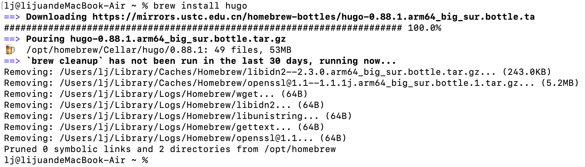 - To verify your new install.
hugo version
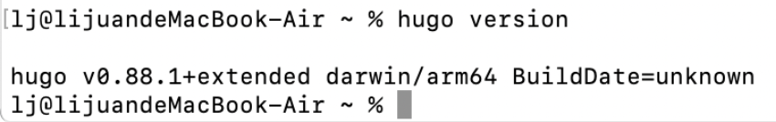
Generate Static Site
Create a New Site
-
Generate a new Hugo site mydoc.
hugo new site mydocmydoc is a sitename
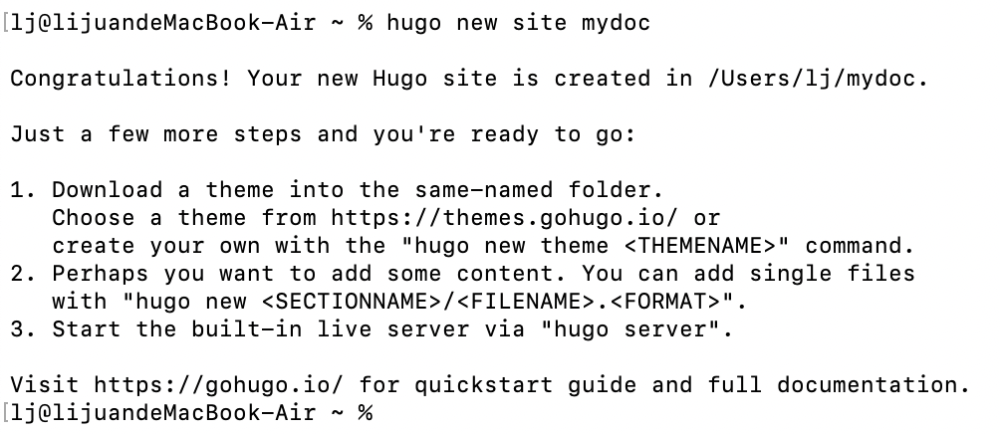
-
The above will create a new Hugo site in a folder named mydoc.
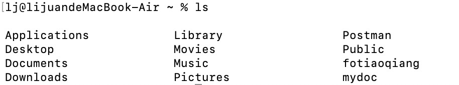
Add a Theme
See themes.gohugo.io for a list of themes to consider. This example uses the beautiful Ananke theme.
-
Navigate to the mydoc directory.
Download the theme from GitHub and add it to your site’s themes directory:cd mydoc git init git submodule add https://github.com/theNewDynamic/gohugo-theme-ananke.git themes/ananke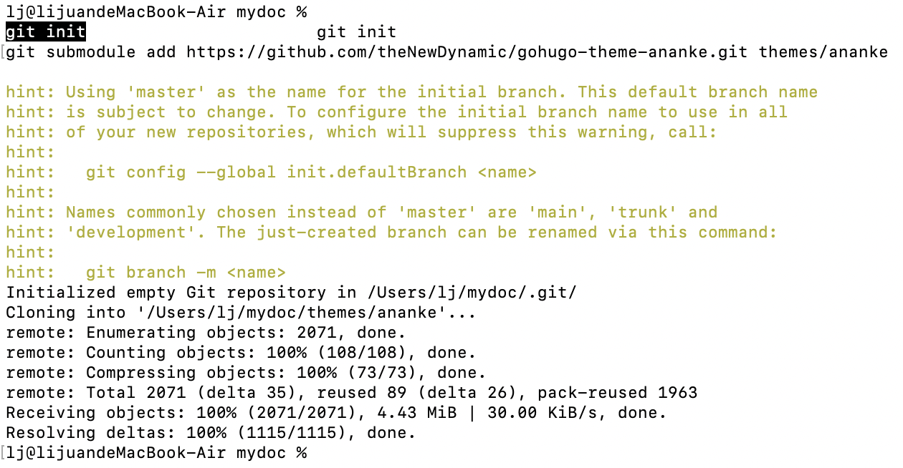
-
Then, add the theme to the site configuration:
Echo theme=\”ananke\”>>config.toml
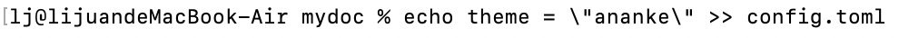
Add Some Content
-
You can manually create content files (for example as content//.) and provide metadata in them, however you can use the new command to do a few things for you (like add title and date):
hugo new posts/my-first-doc.md
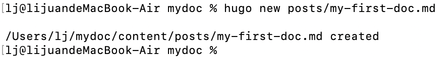 -
Edit the newly created content file if you want, it will start with something like this:
--- title: "My First Doc" date: 2021-09-08T22:33:44+08:00 draft: true ---Drafts do not get deployed; once you finish a post, update the header of the post to say draft: false.
Start the Hugo server
- Now, start the Hugo server with drafts enabled:
hugo server -D
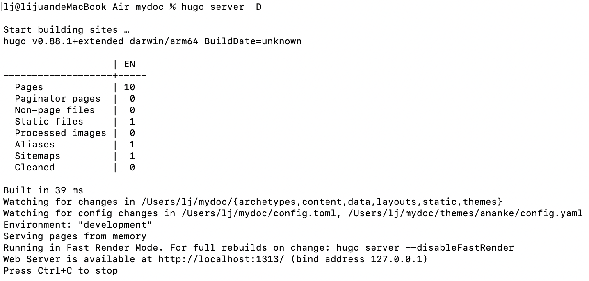 - Navigate to your new site at http://localhost:xxxx/.
Feel free to edit or add new content and simply refresh in browser to see changes quickly (You might need to force refresh in webbrowser, something like Ctrl-R usually works).
Build static pages
If you need to upload this site to the internet, you need to perform this.
- It is simple. Just call:
hugo -D
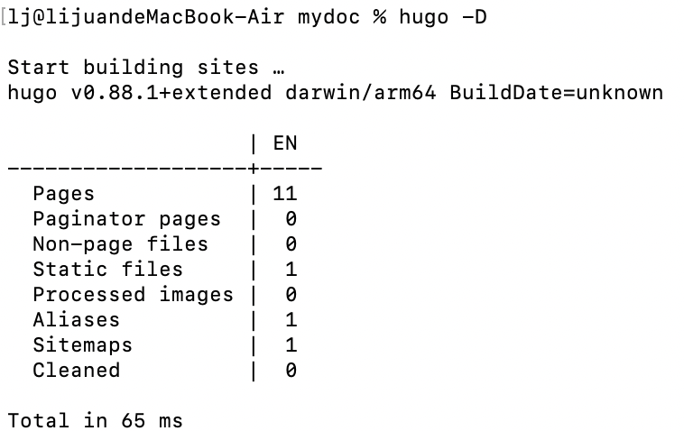 - Output will be in ./public/ directory by default (-d/–destination flag to change it, or set publishdir in the config file).
Publish to Internet
Sign in a account
If you had a account, skip this operate.
- Login in to GitHub: https://github.com.
- Click Create an account, and then fill in the relevant information accounding the prompt.
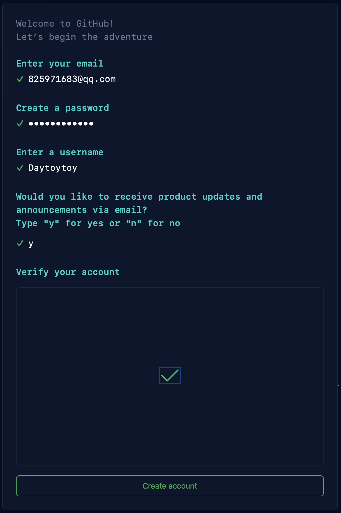
Creat Repository
- Click Create repository.
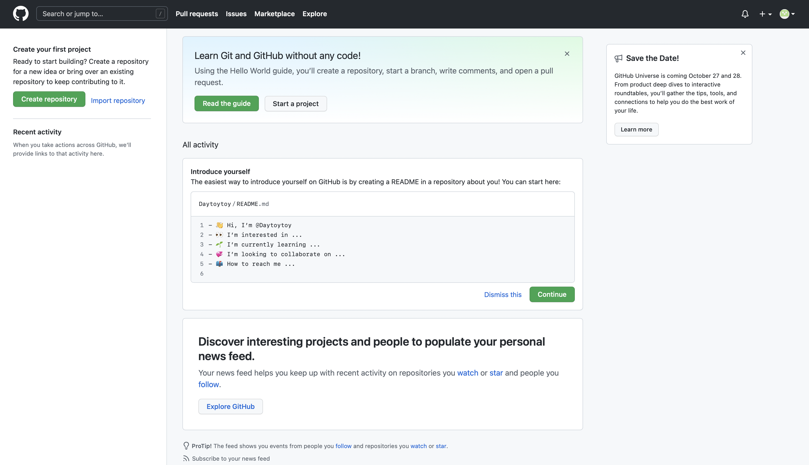 - Fill in Repository name with Daytoytoy.github.io.
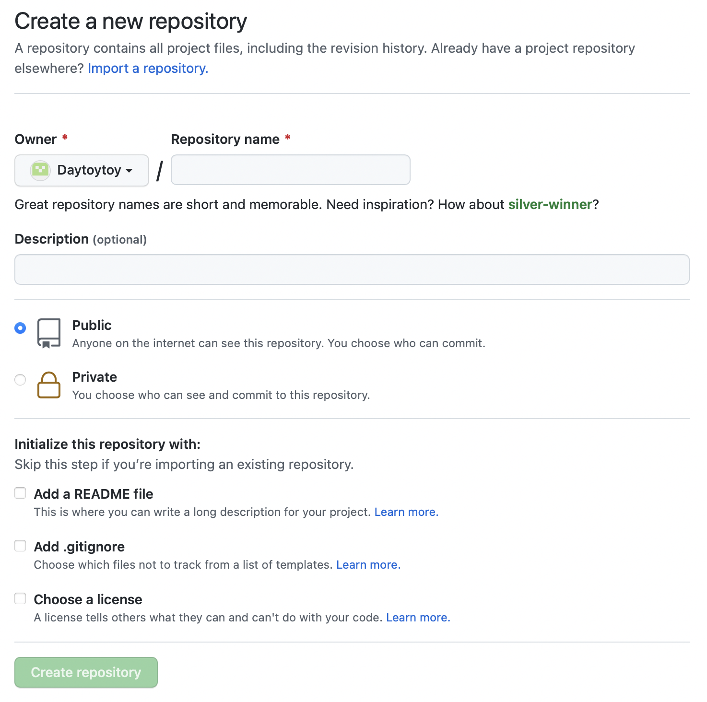 - Click Create repository.
- Copy this：https://github.com/Daytoytoy/Daytoytoy.github.io.git.
Upload Files to Repository
- Navigate to the public directory.
cd public git init - Add and commit the files of current directory.
git add . git commit -m "update commit"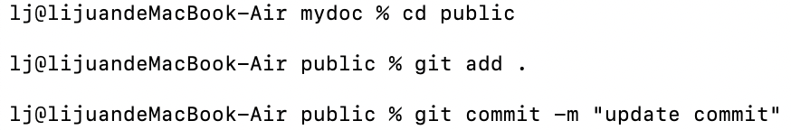
- Create a master branch and connect to github.
git branch -M master git remote add origin https://github.com/Daytoytoy/Daytoytoy.github.io.git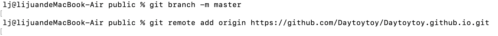
- push the files to github
git push -u origin master
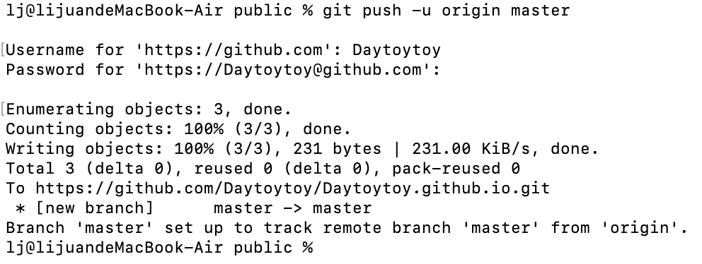You need to enter the username and token of account if you run the push in the first time. If failed to push, you can try again or excute git push -u -f origin master to have a force push.
Access the Site
Navigate to your new site at Daytoytoy.github.io.